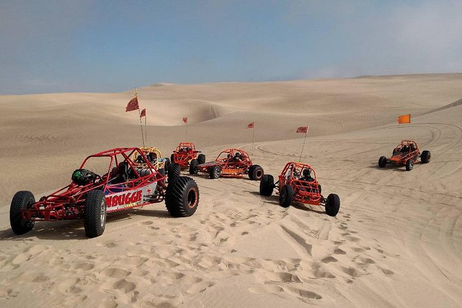

Dominican Republic
This was the first time I went out of the country for anything. My brother was getting married and it was a destination wedding. It was the first "all-inclusive" trip I had ever been on and it was honestly one of the coolest experiances I have had. The worst thing about the trip was honestly the bugs. They weren't huge, but they definitely swarmed. Bugs were in the room, my clothes, my hair, the restaurants, the hotel, etc. I was fully aware that this was their territory and I was the one invading and yet... I just couldn't get past that. Like I said before, it was still a cool trip, I even learned to drive a dune buggy through the towns and into the desert.